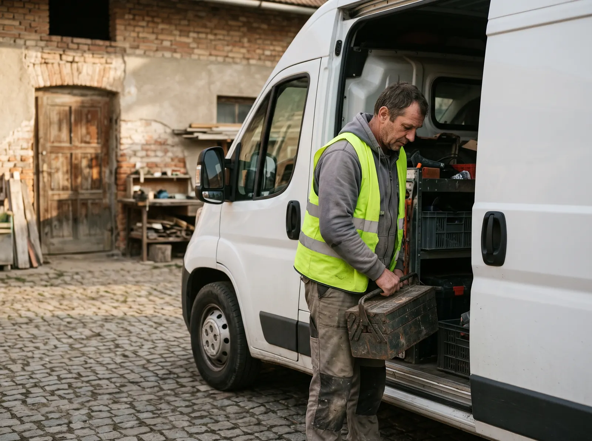
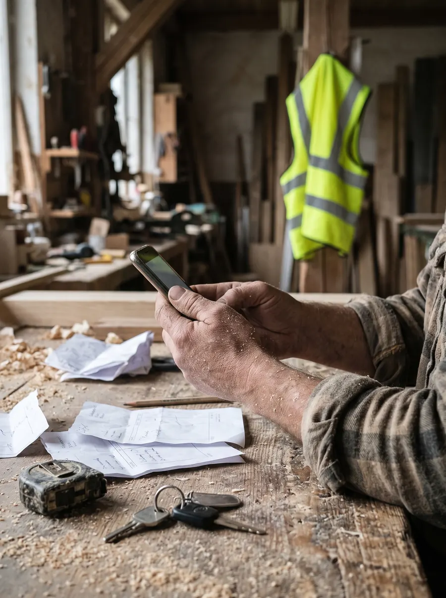
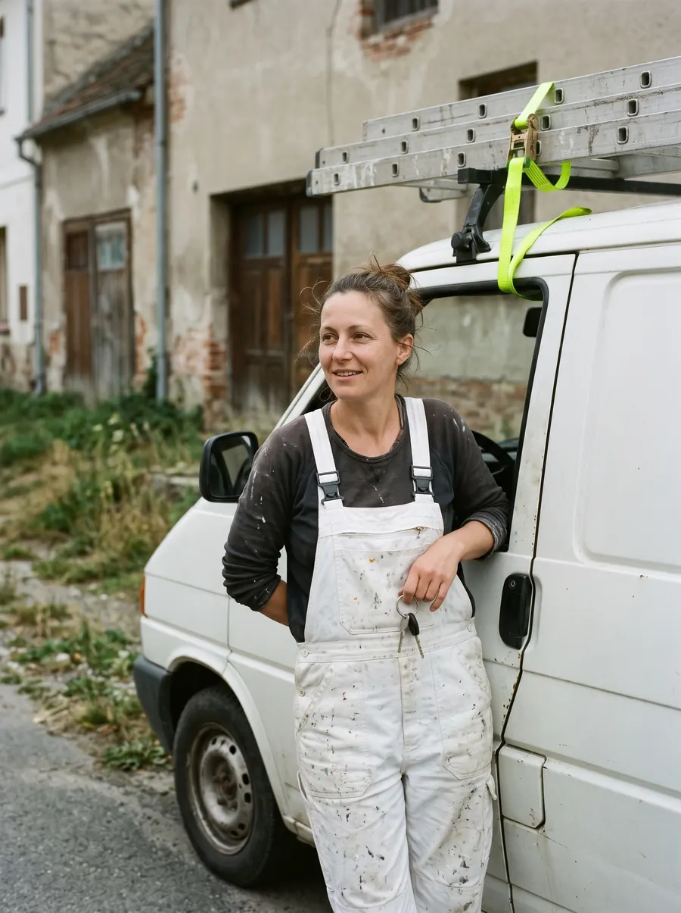
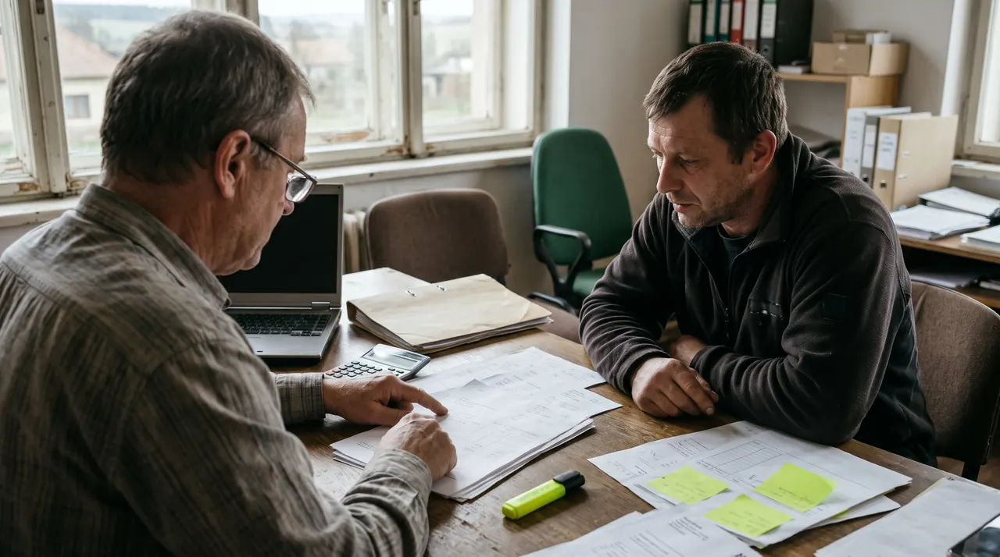
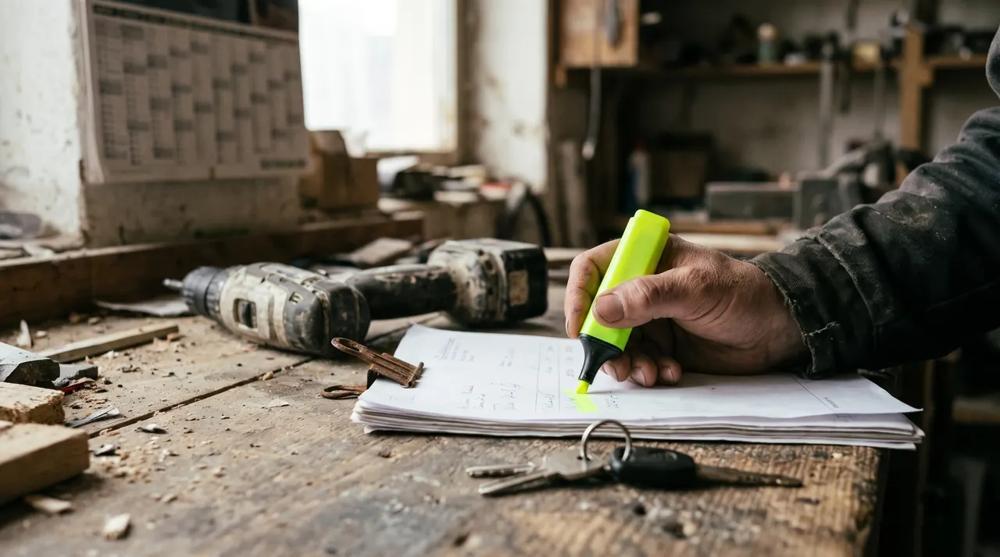
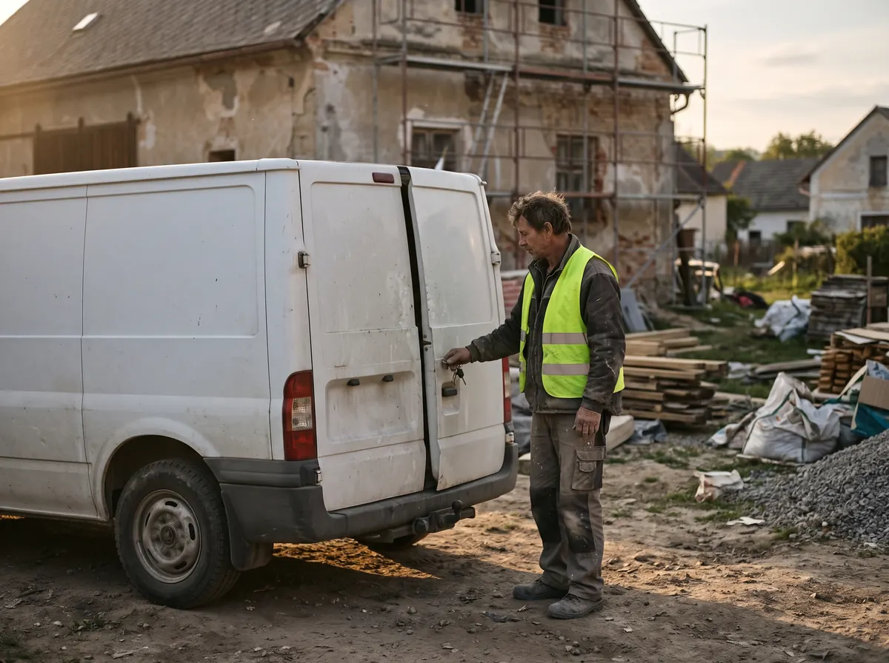

Výhradně pro podnikatele a firmy s IČO
Peníze z auta. Jezdíte dál.
Uvolněte peníze z firemního vozu a mějte víc klidu na zakázky. Auto od vás dočasně vykoupíme, vy ho dál používáte podle smlouvy. Výkupní cenu, poplatky i podmínky zpětného odkupu znáte předem — rozhodnutí máte v rukou.
Nezávazná žádost zdarma · výsledek za 2 minuty · Raději zavolat? 800 123 456

Orientační výpočet · firemní vůz · nezávazně
Tři čísla, která rozhodují
Pozor! Tato služba není zdarma — za rezervaci možnosti zpětného odkupu platíte měsíční poplatek.
Porovnat výkup a poplatky všech tří řad · Nezávazně · všechna čísla předem · jak to funguje férově
Dílna, pole nebo depo — vyberte, co vám vydělává
Stejný férový model pro auto řemeslníka, traktor farmy i tahač dopravce: dočasně vykoupíme, vy jedete dál, odkoupíte zpět za předem známou cenu.
- Dodávky
- Kombi
- SUV
- Osobní firemní
- Traktory
- Kombajny
- Řezačky
- Manipulátory
- Tahače
- Návěsy
- Nákladní
- Dodávky
Materiál platíte dnes, zakázku vám zaplatí za 60 dní
Mezi zálohou na materiál a zaplacenou fakturou stojí kapitál v dodávce. CashAuto tuto mezeru překlene — vůz od vás dočasně vykoupíme, ale z dílny neodjede a zakázky odjezdí.

Tři čísla za 2 minuty
Zadáte IČO a údaje o voze. Výkupní cenu, měsíční poplatek i cenu zpětného odkupu vidíte v Kč hned — mezi dvěma zakázkami.

Prohlídka u vás, hodina práce
Vůz nikam neodvážíte. Technik ověří stav a doklady na místě, potvrdí konečnou nabídku — a provoz nestojí.

Dodávka jezdí dál za zakázkami
Jste provozovatel a vůz dál používáte pro podnikání podle smlouvy o užívání. Odkup po zaplacení zakázky — nebo dřív, bez penalizace.
Tři kroky k penězům na účtu
Dočasný výkup vozu se zpětným odkupem: od formuláře k penězům na firemním účtu — bez inzerce, bez smlouvání a bez toho, aby vaše auto někde stálo.
Zjistíte svá tři čísla
Zadáte IČO a základní údaje o voze. Hned vidíte výkupní cenu, měsíční rezervační poplatek i cenu zpětného odkupu — v Kč, ne v procentech.
Technik přijede k vám
Prohlídka vozu proběhne u vás — v dílně, na stavbě nebo v provozovně. Potvrdíme konečnou nabídku a připravíme smlouvy.
Podpis a peníze na účet
Po podpisu vyplatíme výkupní cenu — zpravidla do 24 hodin. Vůz dál používáte pro podnikání podle smlouvy a kdykoliv ho můžete odkoupit zpět.
Nezávazně · pro OSVČ a firmy s IČO · žádné skryté kroky · přečíst podrobný průvodce
Prodat, čekat — nebo dočasně vykoupit
Poctivé srovnání tří cest. Dočasný výkup není zadarmo — ale auto vám dál vydělává a máte ho zpět za známou cenu.
| Dočasný výkup CashAuto | Prodat vůz natrvalo | Čekat na zaplacení faktur | |
|---|---|---|---|
| Kdy máte peníze | Zpravidla do 24 hodin od podpisu | Až se najde kupec — týdny i měsíce | Za 30–90 dní, když odběratel zaplatí včas |
| Můžete dál jezdit za zakázkami | Ano — podle smlouvy o užívání | Ne — vůz je pryč | Ano |
| Máte auto zpět | Ano — za cenu známou předem | Ne | — |
| Co to stojí | Měsíční rezervační poplatek — v Kč, předem | Nižší cena z bazaru, čas na inzerci a prohlídky | Zastavené zakázky, penále, ušlé tržby |
| Inzerce a smlouvání | Ne — technik přijede k vám | Ano | — |
| Pro koho | OSVČ a firmy, jejichž vůz vydělává | Kdo vůz už nepotřebuje | Kdo si může dovolit čekat |
Pozor! Tato služba není zdarma — za rezervaci možnosti zpětného odkupu platíte měsíční poplatek.
Férové řešení, na které se firma může spolehnout
Služba je určena výhradně podnikatelům a firmám s IČO — spotřebitelům ji neposkytujeme. Pomáháme těm, jejichž vůz vydělává: vozí materiál, lidi i zakázky.
Auto dál pracuje pro vás
Vůz dál používáte pro podnikání podle smlouvy o užívání vozidla — zakázky nestojí.
Vše víte předem
Výkupní cena, poplatek, termíny i možnost zpětného odkupu jsou jasně uvedené.
Bez inzerce a smlouvání
Nemusíte hledat kupce ani řešit prodej přes bazar — a vůz vaší firmě dál slouží.
Odkup kdykoliv dřív
Dobu rezervace volíte 1–12 měsíců. Zaplatí zakázka dřív? Vůz můžete odkoupit zpět hned — bez penalizace.
Vše přehledně na jednom místě
Dokumenty, termíny, rezervační poplatky i cena zpětného odkupu — kdykoliv v mobilu mezi zakázkami, s upozorněním před splatností. Vše pro účetnictví pohromadě.
Prohlédnout klientskou zónuCo si podnikatelé říkají, než se ozvou
Časté dotazy
Cash flow, ceny, oceňování — bez omáčky
Dočasný výkup vozu se zpětným odkupem: jak to funguje krok za krokem
Sedm kroků od formuláře k penězům na firemním účtu — a co přesně podepisujete. Průvodce pro OSVČ a firmy.

Kolik stojí dočasný výkup? Rezervační poplatek srozumitelně (příklad v Kč)
Tři čísla, která rozhodují: výkupní cena, měsíční rezervační poplatek a cena zpětného odkupu. Na příkladu vozu za 300 000 Kč.

Cash flow OSVČ: 7 způsobů, jak překlenout faktury po splatnosti
Zálohy, skonto, faktoring, kontokorent, prodej majetku nebo dočasný výkup vozu — srovnání pro živnostníky a malé firmy.
Provoz se nezastaví. Mějte prostor na další zakázku.
Nabídku si v klidu projděte a rozhodněte, jestli dává vašemu podnikání smysl. Orientační částky zjistíte zdarma za 2 minuty, bez závazku.
- Pro OSVČ a firmy s IČO
- Technik přijede k vám
- Výkup, poplatek i cena odkupu předem
- Auto dál jezdí za zakázkami
Žádné skryté kroky · služba je určena výhradně podnikatelům a firmám — spotřebitelům ji neposkytujeme · CashAuto a.s. · působíme po celé ČR
